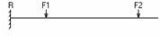
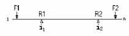
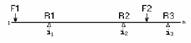

本窗体校核轴的弯曲刚度：
差分法的挠度计算公式：
（h――差分距离）
悬臂梁

（i＝2，…n）
两个支撑的轴

两支承间(i1<i1+i<i2)的挠度计算公式推导如下：
（i＝1，…i2-1-i1）
支承一（R1）之前的差分截面i1-i<i1的挠度计算公式：
（i＝1，…i1-1）
支承二（R2）之后的差分截面i2+i<i2的挠度计算公式：
（i＝1，…n-i2）
超静定轴

支承一与支承二间(i1<i1+i<i2)的挠度计算公式如下：
（i＝1，…i2-1-i1）
支承一（R1）之前的差分截面i1-i<i1的挠度计算公式：
（i＝1，…i1-1）
支承二与支承三间(i2<i2+i<i3)的挠度计算公式如下：
（i＝1，…i3-1-i2）
支承三（R3）之后的差分截面i3+i<i3的挠度计算公式：
（i＝1，…n-i3）
1．“计算”
计算轴上各点处的挠度值。
2．画弯曲变形图
根据计算的挠度值绘制轴的弯曲变形图，根据图中形状选择合适的绘图比例；选择许用变形系数，在弯曲变形图上绘制许用变形区域（平行线表示），
3． “校核”
参看弯曲变形图即可只弯曲刚度校核是否通过。若通过，确定进行下一步临界载荷计算；否则选择回到“轴的总体信息”窗体中重新选择材料或者“造型”窗体中加大轴径优化结构重新开始设计。